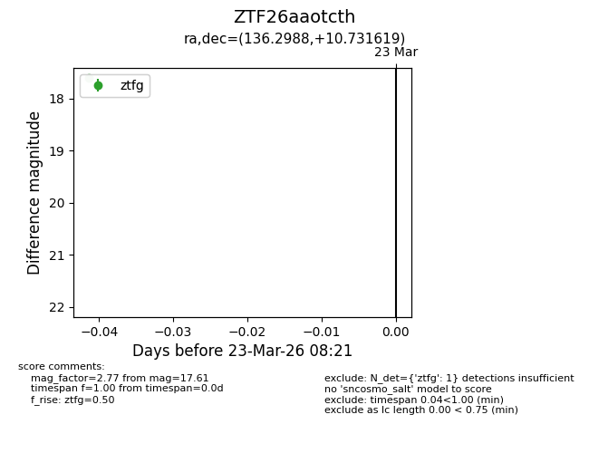
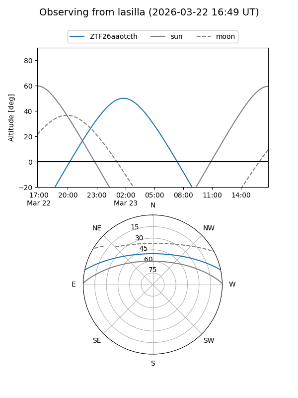
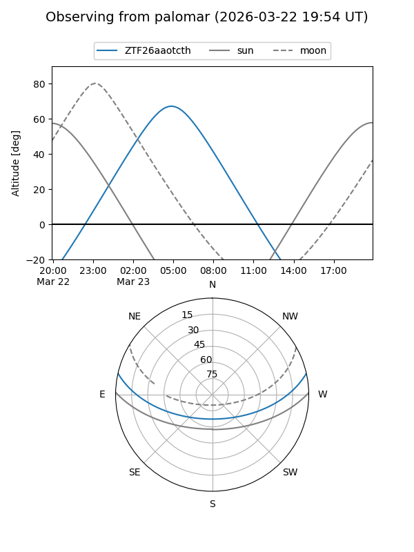

ZTF26aaotcth
Target ZTF26aaotcth at 2026-03-23 08:23
Aliases and brokers:
FINK: link
Lasair: link
ALeRCE: link
alt names
ZTF26aaotcth (ztf,fink_ztf)
Coordinates:
equatorial (ra, dec) = 136.2988,+10.73162
equatorial (HMS+DMS) = 09:05:11.71,+10:43:53.83
galactic (l, b) = (218.5848,+34.52470)
Flags:
Photometry:
last ztfg=17.61
1 ztfg detections
Lightcurve

Visibility


Additional plots